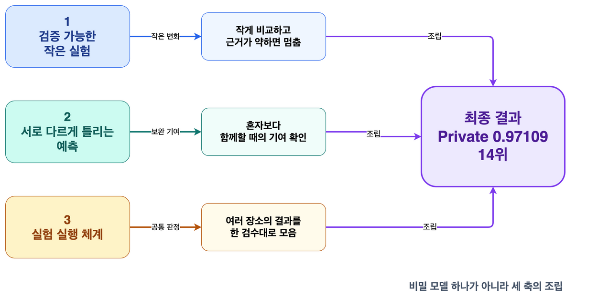

A · 이야기 원문
14위보다 오래 남은 것: Kaggle S6E8 대회 후기
최종 14위는 한 번의 멋진 실험이 아니라, 작은 변화를 확인하고 서로 다르게 틀리는 예측을 남긴 뒤 같은 기준으로 조립한 결과였습니다. 이 글은 그 과정에서 우리의 일하는 방식이 어떻게 달라졌는지를 시간순으로 돌아봅니다.

끝나고 나서야, 14위보다 먼저 보인 것이 있었습니다
대회가 끝났을 때 가장 먼저 눈에 들어온 숫자는 Private 0.97109, 최종 14위였습니다. 하지만 되짚어 보니 이 결과를 만든 것은 비밀 모형 하나가 아니었습니다.
확인할 수 있을 만큼 작게 바꿔 보고, 기대와 다른 결과도 같은 자리에 남기고, 혼자 잘하는 예측보다 함께할 때 빈틈을 메우는 예측을 골랐습니다. 결과보다 오래 남은 것은 이 반복 가능한 방식이었습니다.

실험이 쌓이자, 기억보다 기록이 먼저 필요해졌습니다
처음에는 실험 몇 개를 머릿속으로 비교할 수 있었습니다. 실행 장소와 모형이 늘어나자 이름이 비슷한 결과가 쌓였고, 무엇을 바꿨는지와 왜 남겼는지를 사람의 기억만으로 따라갈 수 없었습니다.

우리는 이 화면을 점수판으로 쓰지 않았습니다. 같은 자료와 같은 분할로 비교할 수 있는 실행만 다음 판단에 사용했고, 좋지 않은 결과도 다음 시도를 막는 근거로 남겼습니다.
다음 이야기
이제 "무엇을 바꿨는가"보다 "그 결과를 어떻게 믿었는가"로 넘어갑니다.
이제 "무엇을 바꿨는가"보다 "그 결과를 어떻게 믿었는가"로 넘어갑니다.